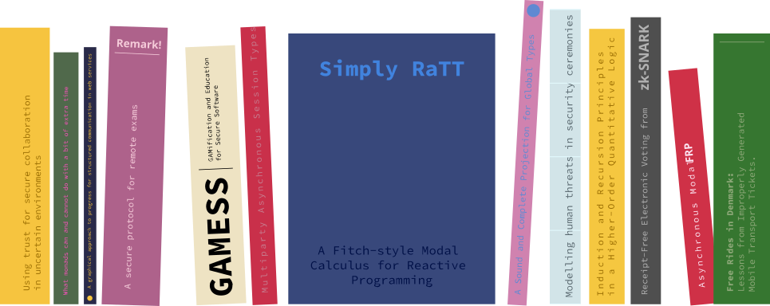

Projects

Ongoing
- PROBABILIstic Session Types (PROBABILIST), PI Marco Carbone, funded by Independent Research Fund Denmark, 2025 - 2029
Past projects
- Algebraic Effects and Guarded Recursion, PI Rasmus Møgelberg, funded by Independent Research Fund Denmark, 2022 - 2025
- MECHANIsation of Session Types (MECHANIST), PI Marco Carbone, Co-PI Jesper Bengtson, funded by Independent Research Fund Denmark, 2021 - 2024
- Practical Static Analysis for Information-Flow Control of JavaScript, PI Willard Rafnsson, funded by Danish Hub for Cybersecurity (Cyber Hub, now Digital Lead), 2022-07-01 - 2023-06-30
- Type Theories for Reactive Programming, PI Rasmus Møgelberg, funded by Villum Fonden, 2016 - 2022
- ProSec - Mapping Emergency and Security Processes in the Danish Energy and Public Transport Sectors and their Dependency on ICT, funded by Forsvarsakademiet
- MetaCLF 2, PI Iliano Cervesato, Co-PI Carsten Schürmann, funded by Qatar National Research Foundation (QNRF)
- Behavioural Types for Reliable Large-Scale Software Systems (BETTY), funded by EU Cost Action IC 1201
- Twelf
- Trustworthy Democratic Technology (DemTech), PI Carsten Schürmann, funded by The Danish Council for Strategic Research, 2011-07-01 - 2017-06-30
- Guarded recursive types in the foundations of programming languages, PI Rasmus Møgelberg, funded by Danish agency for research and innovation, 2015 - 2018
- CHOReography Driven programming and Security (CHORDS), PI Marco Carbone, funded by Danish agency for research and innovation (Steno research grant), 2011 - 2013
- Modeller og detaljerede kalkuler for effekter i programmeringssprog, PI Rasmus Møgelberg, funded by Danish agency for research and innovation (Steno research grant), 2007 - 2010
- Bigraphical Programming Languages (BPL)
- TrustCare, funded by Danish Strategic Research Agency, 2008 - 2012
- The LifeFlow Project (DSL for Programming Interactive Processes)